Primii pași · Lecția 002
Eu sunt…
Prezintă-te și spune cine ești. Urmărește formele verbului „a fi” și felul în care se construiesc propozițiile.
În această pagină
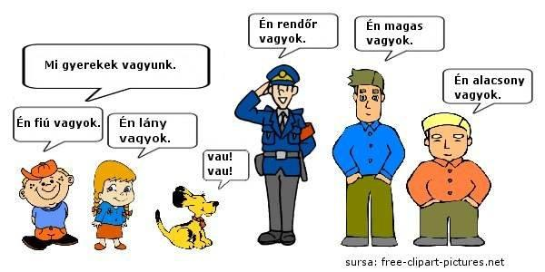
Vezi ilustrația în română
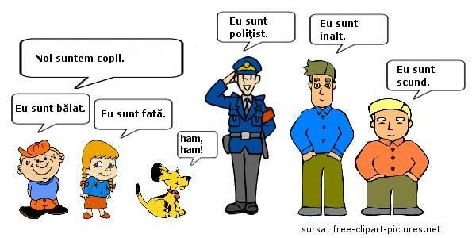
Cuvinte noi:
gyerek, gyermek copil
gyerekek, gyermekek copii
fiú băiat
lány fată
rendőr polițist
magas înalt
alacsony scund
Când ne prezentăm, spunem Én ... vagyok (Eu sunt ...) sau numai ... vagyok (sunt ...), așa cum fac și personajele din ilustrație.
În această lecție vom învăța despre verbul van (este), la infinitiv lenni (a fi).
Deja am întâlnit două forme ale acestui verb în expresiile din prima lecție:
Hogy vagy? Ce mai faci? (literal: "Cum ești?")
Köszönöm, jól vagyok. Mulțumesc, sunt bine. (lit. "..., bine sunt")
Să facem cunoștință acum cu verbul van (a fi) și la celelalte persoane. În același timp învățăm și pronumele personal.
| Én vagyok | Eu sunt |
| Te vagy | Tu ești |
| Ő (van) | El/Ea este |
| Mi vagyunk | Noi suntem |
| Ti vagytok | Voi sunteți |
| Ők (vannak) | Ei/Ele sunt |
Observăm că la persoana a 3-a nu avem două forme de pronume ca în limba română ("el/ea",
respectiv "ei/ele"), ci doar una singură (ő la singular și
ők la plural). Motivul este unul simplu:
"Ő" înseamnă atât el cât și ea, "Ők" înseamnă atât ei cât și ele. Iată o caracteristică care ușurează considerabil învățarea acestei limbi. În maghiară nu există "gen" nici la alte categorii de cuvinte, astfel nu trebuie să ne gândim la acordul între adjectiv și substantiv:
În expresiile "szép fiú" (băiat frumos) și "szép lány" (fată frumoasă), folosim adjectivul "szép" în aceeași formă.
Să vedem acum pronumele personal și verbul "a fi" în câteva dialoguri simple:
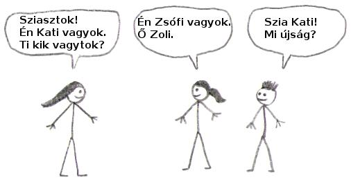
Vezi ilustrația în română
Cuvinte noi:
ki cine
kik cine (plural)
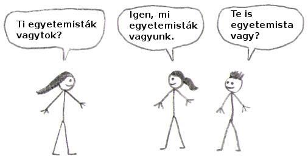
Vezi ilustrația în română
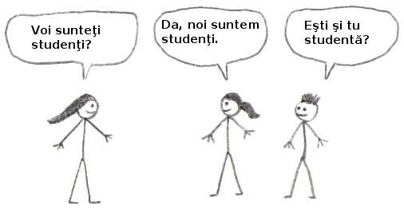
Cuvinte noi:
egyetemista student(ă)
egyetemisták studenți/studente
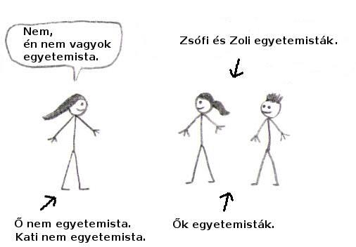
Vezi ilustrația în română
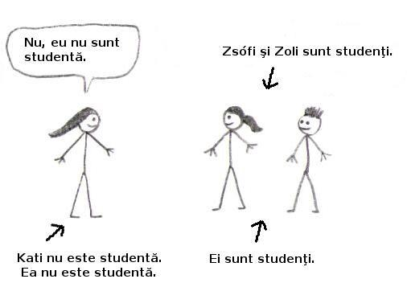
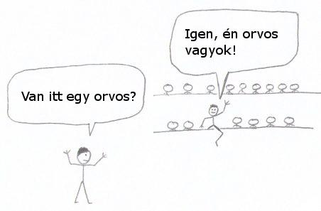
Vezi ilustrația în română
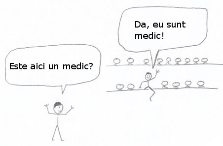
Cuvinte noi:
orvos medic
itt aici
egy un
Ca și în limba română, de multe ori omitem pronumele, dacă este evident după forma verbului despre care persoană este vorba.
De exemplu:
(Én) orvos vagyok (Eu) sunt medic
(Te) ki vagy? (Tu) cine ești?
Forma negativă a verbului "a fi" se spune cu ajutorul cuvântului nem (nu). La persoana a III-a avem o formă mai specială, "nu este" este exprimat printr-un un singur cuvânt: nincs, iar la plural: "nu sunt" este exprimat prin nincsenek.
|
Én nem vagyok Te nem vagy Ő nincs |
Eu nu sunt Tu nu ești El/Ea nu este |
|
Mi nem vagyunk Ti nem vagytok Ők nincsenek |
Noi nu suntem Voi nu sunteți Ei/Ele nu sunt |
Cititorul atent poate observa în dialogurile de mai sus o "ciudățenie" a limbii maghiare. În majoritatea cazurilor, verbul la persoana a III-a, atât la singular, cât și la plural (adică van și vannak) se omite (verbul este subînțeles). De ex. "Ő Zoli." (El este Zoli) sau "Ők egyetemisták." (Ei sunt studenți), sau "Kati szép" (Kati este frumoasă). Acest fenomen apare numai la persoana a III-a, la celelalte persoane totdeauna se spune și verbul "a fi". Există însă cazuri și la persoana a III-a când verbul apare explicit. Să vedem care sunt aceste cazuri.
1. Verbul "a fi" este prezent și la persoana a III-a, când:
- Are sensul de "a exista, a se afla, a se găsi", adică se folosește în sens propriu.
- Apare cu un adverb.
|
- Van kenyér? - Van. |
- Este pâine ? - Este. |
|
- Van itt egy orvos? - Van. |
- Este un medic aici? - Este. |
|
Én jól vagyok Te jól vagy Ő jól van Mi jól vagyunk Ti jól vagytok Ők jól vannak Én otthon vagyok Te otthon vagy Ő otthon van Mi otthon vagyunk Ti otthon vagytok Ők otthon vannak |
Eu sunt bine Tu ești bine El/Ea este bine Noi suntem bine Voi sunteți bine Ei/Ele sunt bine Eu sunt acasă Tu ești acasă El/Ea este acasă Noi suntem acasă Voi sunteți acasă Ei/Ele sunt acasă |
În aceste cazuri, la forma negativă spunem nincs (nu este), respectiv nincsenek (nu sunt) conform tabelului de mai sus.
Exemple:|
- Van alma? - Nincs. |
- Este măr? - Nu este. |
|
- Van itt egy orvos? - Nincs. - Vannak itt orvosok? - Nincsenek. |
- Este un medic aici? - Nu este. - Sunt medici aici? - Nu sunt. |
Sau cu adverb:
|
Én nem vagyok jól Te nem vagy jól Ő nincs jól Mi nem vagyunk jól Ti nem vagytok jól Ők nincsenek jól |
Eu nu sunt bine Tu nu ești bine El/Ea nu este bine Noi nu suntem bine Voi nu sunteți bine Ei/Ele nu sunt bine |
2. Verbul "a fi" este subînțeles la persoana a III-a când apare într-o construcție cu un substantiv sau cu un adjectiv (predicat nominal).
În acest caz și la forma negativă se omite verbul nincs (nu este) sau nincsenek (nu sunt), și rămâne un singur nem (nu).
Exemple:
|
Én orvos vagyok Te orvos vagy Ő orvos Mi orvosok vagyunk Ti orvosok vagytok Ők orvosok |
Eu sunt medic Tu ești medic El/ea este medic Noi suntem medici Voi sunteți medici Ei/Ele sunt medici |
|
Én jó vagyok Te jó vagy Ő jó Mi jók vagyunk Ti jók vagytok Ők jók |
Eu sunt bun(ă) Tu ești bun(ă) El/Ea este bun(ă) Noi suntem buni/bune Voi sunteți buni/bune Ei/Ele sunt buni/bune |
Și la forma negativă:
|
Én nem vagyok orvos Te nem vagy orvos Ő nem orvos Mi nem vagyunk orvosok Ti nem vagytok orvosok Ők nem orvosok |
Eu nu sunt medic Tu nu ești medic El/Ea nu este medic Noi nu suntem medici Voi nu sunteți medici Ei/Ele nu sunt medici |
|
Én nem vagyok magas Te nem vagy magas Ő nem magas Mi nem vagyunk magasak Ti nem vagytok magasak Ők nem magasak |
Eu nu sunt înalt(ă) Tu nu ești înalt(ă) El/Ea nu este înalt(ă) Noi nu suntem înalți/înalte Voi nu sunteți înalți/înalte Ei/Ele nu sunt înalți/înalte |
Probabil că tabelele de mai sus vi se par un pic complicate. De fapt e foarte simplu: verbul "a fi" se folosește exact ca și în limba română. Singura diferență este că van (este) și vannak (sunt) sunt ascunse când apar cu un adjectiv sau cu un substantiv.
Priviți următoarele ilustrații:
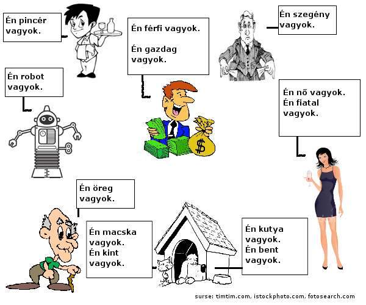
Vezi ilustrația în română
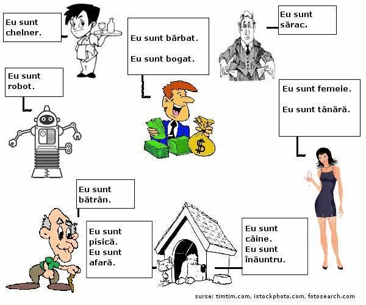
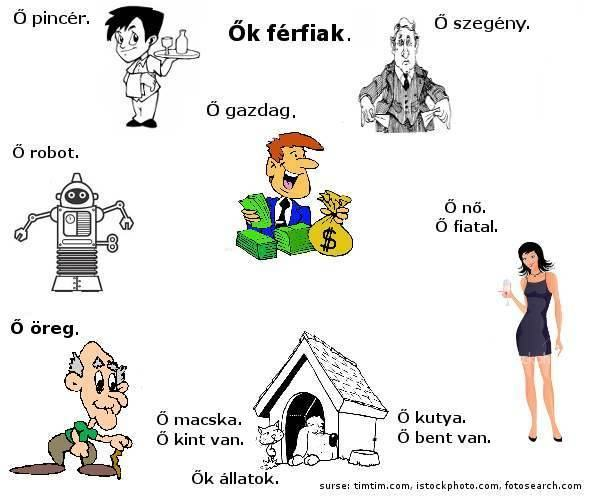
Vezi ilustrația în română
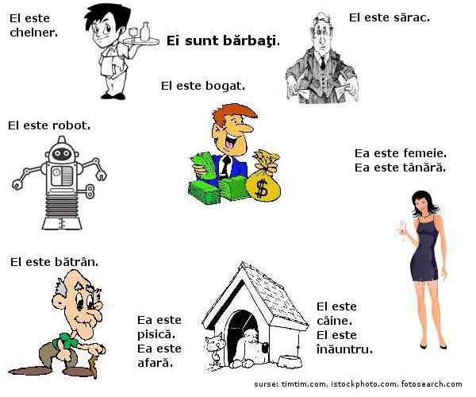
Cuvinte noi:
férfi bărbat
nő femeie
fiatal tânăr(ă)
öreg bătrân(ă)
szegény sărac(ă)
gazdag bogat(ă)
kutya câine
macska pisică
kint afară
bent înăuntru
robot robot
pincér chelner
In a doua ilustrație observăm că van apare explicit doar în kint van și bent van, deoarece kint și bent sunt adverbe, iar în restul exemplelor avem substantiv sau adjectiv.
În această lecție am învățat pronumele personal și verbul "a fi". Am învățat formele pozitive și negative ale acestui verb. Am văzut că la persoana a III-a de multe ori se omite verbul. Am văzut că în maghiară nu există gen gramatical. Am învățat multe cuvinte noi. Cu ajutorul dicționarului puteți încerca deja să construiți dialoguri simple (folosind expresiile învățate), să vă prezentați în câteva propoziții scurte (nume, ocupație, cine/cum sunteți/nu sunteți, ș.a.m.d.), sau să descrieți un prieten/o prietenă. Puteți posta aceste propoziții pe ca să le corectăm.
În această ultimă ilustrație afișăm prima dată versiunea în română. Încercați să ghiciți textul în maghiară, și verificați o variantă corectă mișcând mouse-ul deasupra imaginii.
Cuvinte noi:
lent jos
fent sus
állat animal
orvos medic
állatorvos medic veterinar
beteg bolnav
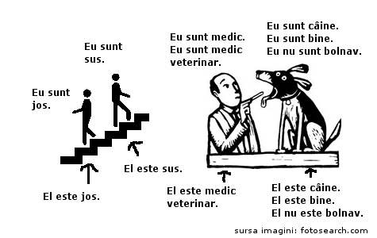
Vezi ilustrația în română
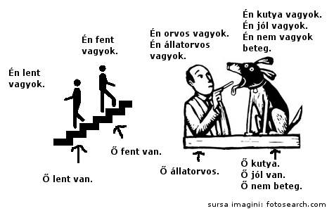
Exerciții:
- Completați cu formele verbului van "a fi".
- Completați cu van sau vannak acolo unde este necesar sau se poate. În rest trebuie omis. În paranteză dreaptă aveți traducerea literală a construcțiilor specific maghiare.
- Răspundeți negativ la întrebări.
|
Én Tibi ... Te ki ...? Mi orvosok ... Ti egyetemisták ...? Hol ... Éva? És a fiúk hol ...? |
Eu sunt Tibi. Tu cine ești? Noi suntem medici. Voi sunteți studenți? Unde este Eva? Și băieții unde sunt? |
|
- ... itt egy rendőr? - Ő ... rendőr. - Hogy ... Emil? - Jól ... - ... körte? - Igen, fent ... - Feri ... magas? - Nem, ... alacsony. - ... kint egyetemisták? - Nem, bent ... - Ők ... orvosok? - Nem, ... egyetemisták. |
- Este vreun polițist aici? - El e polițist. - Ce mai face [Cum este] Emil? - Bine [Este bine]. - Sunt pere [Este pară]? - Da, sunt [este] sus. - Feri e înalt? - Nu, e scund. - Sunt afară studenți? - Nu, sunt înăuntru. - Ei sunt medici? - Nu, sunt studenți. |
|
- Fent vagy? - ... - Éva itt van? - ... - A gyerekek bent vannak? - ... - Egyetemisták vagytok? - ... - Szép vagyok? - ... - Jó egyetemisták vagyunk? - ... |
- Ești sus? - Nu sunt sus. - Eva e aici? - Nu e aici. - Copiii sunt înăuntru? - Nu sunt înăuntru. - Sunteți studenți? - Nu suntem studenți. - Sunt frumos(oasă)? - Nu ești frumos(oasă). - Suntem studenți buni? - Nu sunteți studenți buni. |
".